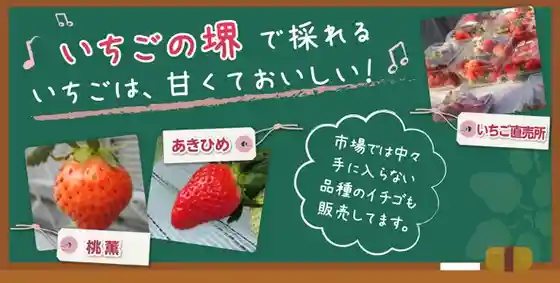
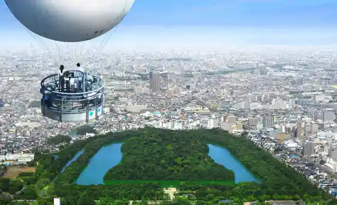
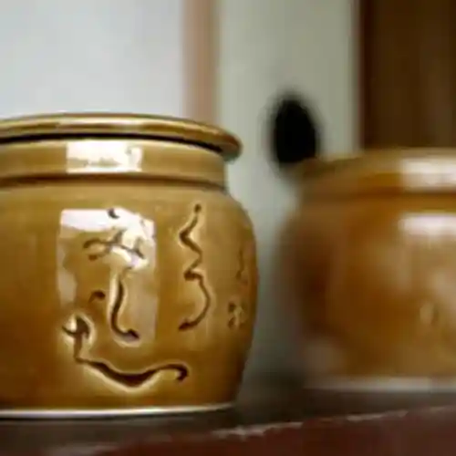
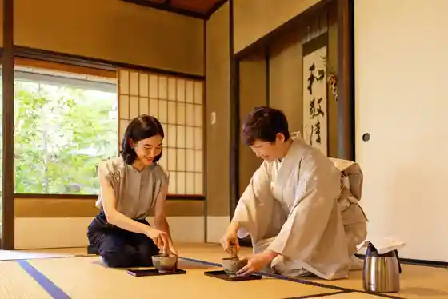

Ichigo no Sakai
Sakai, Osaka · 090-3275-4115

Osaka Sakai Barun
Sakai, Osaka

Kan Fukuro
Sakai, Osaka · 072-233-1218

Sakai Ri Aki no Mori
Sakai, Osaka · 072-260-4386

Konpeito Museum Sakai
Sakai, Osaka · 072-282-2790
Zabieru Park
Sakai, Osaka
Shima no Jitensha Museum
Sakai, Osaka · 072-221-3196
Sofia Sakai (Sakai Kyoiku Bunka Center) Puranetariumu Sen no Yume Kirameku Sakai Hoshizora Kan
Sakai, Osaka · 072-270-8110
Feniiche Sakai (Sakai Mingei Jutsu Bunka Horu)
Sakai, Osaka · 072-223-1000
Nintoku Tenno Ryo Burial Mound (Daisen Ryo Burial Mound)
Sakai, Osaka · 072-241-0002
Nanshu Tera
Sakai, Osaka · 072-232-1654
Doto
Sakai, Osaka
Sakai Arufonsu Myusha Kan
Sakai, Osaka · 072-222-5533
Sakai Midori no Museum Habesuto no Oka
Sakai, Osaka · 072-2966-9911
Sakai Den Takumi Kan
Sakai, Osaka · 072-227-1001
Sakai Museum
Sakai, Osaka · 072-245-6201
Sakai Yakusho 21 Kai Tembo Robii
Sakai, Osaka · 072-228-7493
Sakai Gyoren Toretore City
Sakai, Osaka · 072-221-7272
Sakai Ritsu Bigguban
Sakai, Osaka · 072-294-0999
Sakai Chashitsu Shin Iori Obai Iori
Sakai, Osaka · 072-247-1447
Sakai Higashi Tourist Information
Sakai, Osaka · 072-238-7174
Sakai Senko (Ume Sakae Do Shorumu)
Sakai, Osaka · 072-229-4545
Sakai Eki Tourist Information
Sakai, Osaka · 072-232-0331
Taji Soku Hime Shrine
Sakai, Osaka · 072-297-0726
Daisen Park
Sakai, Osaka · 072-241-0291
Daisen Park Nippon Garden
Sakai, Osaka · 072-247-3670
Daisen Koen Tourist Information
Sakai, Osaka · 072-245-6207
Taian Tera
Sakai, Osaka
Taiho Yama Houn Zendera (Houn Tera)
Sakai, Osaka · 072-361-4419
Oizumi Ryokuchi
Sakai, Osaka · 072-259-0316
Ohama Park
Sakai, Osaka · 072-232-1489
Otori Taisha
Sakai, Osaka · 072-262-0040
Yamaguchi Ie House
Sakai, Osaka · 072-224-1155
Katatagae Shrine
Sakai, Osaka · 072-232-1216
Kyu Sakai Todai
Sakai, Osaka · 072-228-7198
Honganji Sakai Betsuin
Sakai, Osaka · 072-232-4417
Sakurai Shrine
Sakai, Osaka · 072-297-0043
Hodo Tera
Sakai, Osaka · 072-297-0705
Hamadera Park
Sakai, Osaka · 072-261-0936
Hamadera Koen Bara Garden
Sakai, Osaka · 072-261-0936
Hamadera Koen Kyueki Sha
Sakai, Osaka · 072-261-0033
Kiyoshi Gakuin
Sakai, Osaka · 072-228-1501
Shirasagi Park Hanashobu Sono
Sakai, Osaka · 072-276-6818
Mozu Hachiman Shrine
Sakai, Osaka · 072-252-1089
Mozu Kofun Gun
Sakai, Osaka
Shoun Tera
Sakai, Osaka · 072-232-2131
Sugawara Shrine
Sakai, Osaka · 072-232-2450
Sugo Shrine
Sakai, Osaka · 072-361-0323
Hagiwara Tenjin (Hagiwara Shrine)
Sakai, Osaka · 072-285-0295
Tourist Farm Minami Rakuen
Sakai, Osaka · 072-298-5037
Teppo Kaji Residence
Sakai, Osaka · 072-228-1501
Kaiko Shrine
Sakai, Osaka · 072-221-0171
Kaiko Shrine Miko Experience
Sakai, Osaka
Takabayashi Ie House
Sakai, Osaka
Kurohime Yama Burial Mound
Sakai, Osaka · 072-362-2737